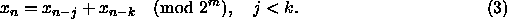
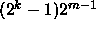
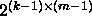
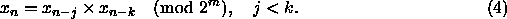
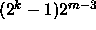

The Additive Lagged-Fibonacci Generator (ALFG) is:

In recent years
the ALFG has become a popular generator for serial as well as scalable
parallel machines because it is easy to implement, it is cheap to
compute and it does well on standard statistical
tests [11], especially when the lag k is sufficiently
high (such as k = 1279). The maximal period of the ALFG is
 [26, 27] and has 
different full-period cycles [28]. Another advantage of the
ALFG is that one can implement these generators directly in
floating-point to avoid the conversion from integer to floating-point
that accompanies the use of other generators. However, some care
should be taken in the implementation to avoid floating point
round-off errors [15].
In the previous sections we have discussed generators that can be parallelized by varying a parameter in the underlying recursion. Instead the ALFG can be parameterized through its initial values because of the tremendous number of different cycles. We produce different streams by assigning each stream a different cycle. An elegant seeding algorithm that accomplishes this is described in reference [28].
An interesting cousin of the ALFG is the Multiplicative
Lagged-Fibonacci Generator (MLFG). It is defined by:

While this generator has a maximal-period of , which is a
quarter the length of the corresponding ALFG [27], it has empirical
properties considered to be superior to ALFGs [11].
Of interest for
parallel computing is that a parameterization analogous to that of the
ALFG exists for the MLFG [29].